library(torch)
library(ggplot2)
library(patchwork)
library(tidyr)
library(zeallot)
morlet <- function(omega, K, t_k, t) {
(torch_exp(-1i * omega * (t - t_k)) -
torch_exp(-torch_square(K))) *
torch_exp(-torch_square(omega) * torch_square(t - t_k) /
torch_square(2 * K))
}28 Wavelets
We conclude the book with a practical application of wavelet analysis using torch.
With the Fourier Transform, it was all about understanding the concepts, so we can use torch_fft_ftt() with confidence. This time, there is no ready-to-use function around; but we’ll see that computing the Wavelet Transform ourselves is not that hard. (And yes, torch_fft_ftt() will figure prominently, here, too.)
What are wavelets? Like the Fourier basis, they’re functions; but they don’t extend infinitely. Instead, they are localized in time: Away from the center, they quickly decay to zero. In addition to a location parameter, they also have a scale: At different scales, they appear squished or stretched. Squished, they will do better at detecting high frequencies; the converse applies when they’re stretched out in time.
The basic operation involved in the Wavelet Transform is convolution – have the (flipped) wavelet slide over the data, computing a sequence of dot products. This way, the wavelet is basically looking for similarity.
As to the wavelet functions themselves, there are many of them. In a practical application, we’d want to experiment and pick the one that works best for the given data. Compared to the DFT and spectrograms, more experimentation tends to be involved in wavelet analysis.
The topic of wavelets is very different from that of Fourier transforms in other respects, as well. Notably, there is a lot less standardization in terminology, use of symbols, and actual practices. For these reasons, I will refrain from giving a systematic, general introduction, the way I did in the DFT chapter. Instead, I’m going to heavily lean on one specific exposition, the one in Arnt Vistnes’ very nice book on waves (Vistnes 2018). In other words, both terminology and examples will reflect the choices made in that book.
One choice Vistnes made was to favor depth over breadth, and to focus on a single wavelet.
28.1 Introducing the Morlet wavelet
The Morlet, also known as Gabor1, wavelet is defined like so:
\[ \Psi_{\omega_{a},K,t_{k}}(t_n) = (e^{-i \omega_{a} (t_n - t_k)} - e^{-K^2}) \ e^{- \omega_a^2 (t_n - t_k )^2 /(2K )^2} \tag{28.1}\]
This formulation pertains to discretized data, the kinds of data we work with in practice. Thus, \(t_k\) and \(t_n\) designate points in time, or equivalently, individual time-series samples.
This equation looks daunting at first, but we can “tame” it a bit by analyzing its structure, and pointing to the main actors. For concreteness, though, we first look at an example wavelet.
We start by implementing Equation 28.1:
Comparing code and mathematical formulation, we notice a difference. The function itself takes one argument, \(t_n\); its realization, four (omega, K, t_k, and t). This is because the torch code is vectorized: On the one hand, omega, K, and t_k, which, in Equation 28.1, correspond to \(\omega_{a}\), \(K\), and \(t_k\) , are scalars. (In the equation, they’re assumed to be fixed.) t, on the other hand, is a vector; it will hold the measurement times of the series to be analyzed.
We pick example values for omega, K, and t_k, as well as a range of times to evaluate the wavelet on, and plot its values (fig. 28.1):
omega <- 6 * pi
K <- 6
t_k <- 5
sample_time <- torch_arange(3, 7, 0.0001)
create_wavelet_plot <- function(omega, K, t_k, sample_time) {
morlet <- morlet(omega, K, t_k, sample_time)
df <- data.frame(
x = as.numeric(sample_time),
real = as.numeric(morlet$real),
imag = as.numeric(morlet$imag)
) %>%
pivot_longer(-x, names_to = "part", values_to = "value")
ggplot(df, aes(x = x, y = value, color = part)) +
geom_line() +
scale_colour_grey(start = 0.8, end = 0.4) +
xlab("time") +
ylab("wavelet value") +
ggtitle("Morlet wavelet",
subtitle = paste0("ω_a = ", omega / pi, "π , K = ", K)
) +
theme_minimal()
}
create_wavelet_plot(omega, K, t_k, sample_time)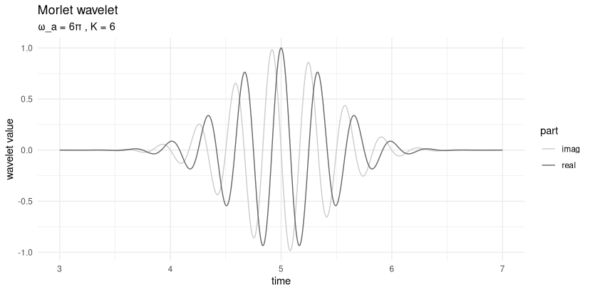
What we see here is a complex sine curve – note the real and imaginary parts, separated by a phase shift of \(\pi/2\) – that decays on both sides of the center. Looking back at Equation 28.1, we can identify the factors responsible for both features. The first term in the equation, \(e^{-i \omega_{a} (t_n - t_k)}\), generates the oscillation; the third, \(e^{- \omega_a^2 (t_n - t_k )^2 /(2K )^2}\), causes the exponential decay away from the center. (In case you’re wondering about the second term, \(e^{-K^2}\): For given \(K\), it is just a constant.)
The third term actually is a Gaussian, with location parameter \(t_k\) and scale \(K\). We’ll talk about \(K\) in great detail soon, but what’s with \(t_k\)? \(t_k\) is the center of the wavelet; for the Morlet wavelet, this is also the location of maximum amplitude. As distance from the center increases, values quickly approach zero. This is what is meant by wavelets being localized: They are “active” only on a short range of time.
28.2 The roles of \(K\) and \(\omega_a\)
Now, we already said that \(K\) is the scale of the Gaussian; it thus determines how far the curve spreads out in time. But there is also \(\omega_a\). Looking back at the Gaussian term, it, too, will impact the spread.
First though, what is \(\omega_a\)? The subscript \(a\) stands for “analysis”; thus, \(\omega_a\) denotes a single frequency being probed. At this point, a quick aside on workflow – this will become much clearer later, when we actually run the Wavelet Transform):
A single transform, resulting in spectrogram-like, three-dimensional output, operates on a set of analysis frequencies (\(\omega_a\)), and covers the whole time range (\(t_n\)).
That covering is achieved by having the wavelet slide over the input, its position at each step being identified by its center, \(t_k\).
What’s missing from this characterization is \(K\). That’s because you run a separate wavelet analysis for each \(K\) of interest.
Now, let’s first inspect visually the respective impacts of \(\omega_a\) and \(K\) (fig. 28.2).
p1 <- create_wavelet_plot(6 * pi, 4, 5, sample_time)
p2 <- create_wavelet_plot(6 * pi, 6, 5, sample_time)
p3 <- create_wavelet_plot(6 * pi, 8, 5, sample_time)
p4 <- create_wavelet_plot(4 * pi, 6, 5, sample_time)
p5 <- create_wavelet_plot(6 * pi, 6, 5, sample_time)
p6 <- create_wavelet_plot(8 * pi, 6, 5, sample_time)
(p1 | p4) /
(p2 | p5) /
(p3 | p6)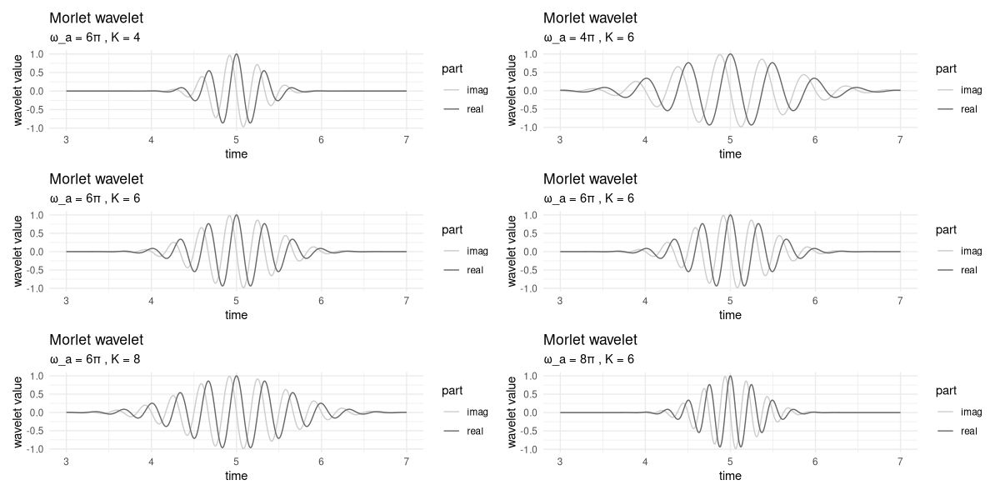
In the left column, we keep \(\omega_a\) constant, and vary \(K\). On the right, \(\omega_a\) changes, and \(K\) stays the same.
Firstly, we observe that the higher \(K\), the more the curve gets spread out. In a wavelet analysis, this means that more points in time will contribute to the transform’s output, resulting in high precision as to frequency content, but loss of resolution in time. (We’ll return to this – central – trade-off soon.)
As to \(\omega_a\), its impact is twofold. On the one hand, in the Gaussian term, it counteracts – exactly, even – the scale parameter, \(K\). On the other, it determines the frequency, or equivalently, the period, of the wave. To see this, take a look at the right column. Corresponding to the different frequencies, we have, in the interval between 4 and 6, four, six, or eight peaks, respectively.
This double role of \(\omega_a\) is the reason why, all-in-all, it does make a difference whether we shrink \(K\), keeping \(\omega_a\) constant, or increase \(\omega_a\), holding \(K\) fixed.
This state of things sounds complicated, but is less problematic than it might seem. In practice, understanding the role of \(K\) is important, since we need to pick sensible \(K\) values to try. As to the \(\omega_a\), on the other hand, there will be a multitude of them, corresponding to the range of frequencies we analyze.
So we can understand the impact of \(K\) in more detail, we need to take a first look at the Wavelet Transform.
28.3 Wavelet Transform: A straightforward implementation
While overall, the topic of wavelets is more multifaceted, and thus, may seem more enigmatic than Fourier analysis, the transform itself is easier to grasp. It is a sequence of local convolutions between wavelet and signal. Here is the formula for specific scale parameter \(K\), analysis frequency \(\omega_a\), and wavelet location \(t_k\):
\[ W_{K, \omega_a, t_k} = \sum_n x_n \Psi_{\omega_{a},K,t_{k}}^*(t_n) \]
This is just a dot product, computed between signal and complex-conjugated wavelet. (Here complex conjugation flips the wavelet in time, making this convolution, not correlation – a fact that matters a lot, as you’ll see soon.)
Correspondingly, straightforward implementation results in a sequence of dot products, each corresponding to a different alignment of wavelet and signal. Below, in wavelet_transform(), arguments omega and K are scalars, while x, the signal, is a vector. The result is the wavelet-transformed signal, for some specific K and omega of interest.
wavelet_transform <- function(x, omega, K) {
n_samples <- dim(x)[1]
W <- torch_complex(
torch_zeros(n_samples), torch_zeros(n_samples)
)
for (i in 1:n_samples) {
# move center of wavelet
t_k <- x[i, 1]
m <- morlet(omega, K, t_k, x[, 1])
# compute local dot product
# note wavelet is conjugated
dot <- torch_matmul(
m$conj()$unsqueeze(1),
x[, 2]$to(dtype = torch_cfloat())
)
W[i] <- dot
}
W
}To test this, we generate a simple sine wave that has a frequency of 100 Hertz in its first part, and double that in the second (fig. 28.3).
gencos <- function(amp, freq, phase, fs, duration) {
x <- torch_arange(0, duration, 1 / fs)[1:-2]$unsqueeze(2)
y <- amp * torch_cos(2 * pi * freq * x + phase)
torch_cat(list(x, y), dim = 2)
}
# sampling frequency
fs <- 8000
f1 <- 100
f2 <- 200
phase <- 0
duration <- 0.25
s1 <- gencos(1, f1, phase, fs, duration)
s2 <- gencos(1, f2, phase, fs, duration)
s3 <- torch_cat(list(s1, s2), dim = 1)
s3[(dim(s1)[1] + 1):(dim(s1)[1] * 2), 1] <-
s3[(dim(s1)[1] + 1):(dim(s1)[1] * 2), 1] + duration
df <- data.frame(
x = as.numeric(s3[, 1]),
y = as.numeric(s3[, 2])
)
ggplot(df, aes(x = x, y = y)) +
geom_line() +
xlab("time") +
ylab("amplitude") +
theme_minimal()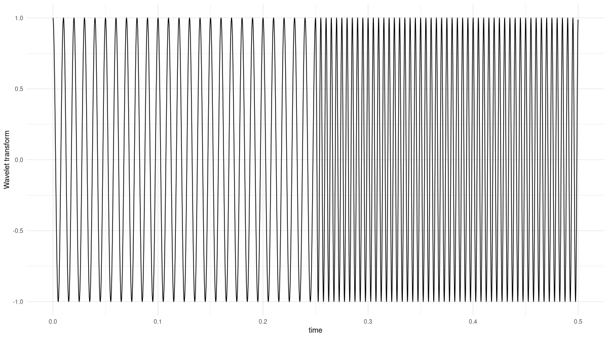
Now, we run the Wavelet Transform on this signal, for an analysis frequency of 100 Hertz, and with a K parameter of 2, found through quick experimentation (fig. 28.4):
K <- 2
omega <- 2 * pi * f1
res <- wavelet_transform(x = s3, omega, K)
df <- data.frame(
x = as.numeric(s3[, 1]),
y = as.numeric(res$abs())
)
ggplot(df, aes(x = x, y = y)) +
geom_line() +
xlab("time") +
ylab("Wavelet Transform") +
theme_minimal()
The transform correctly picks out the part of the signal that matches the analysis frequency. If you feel like, you might want to double-check what happens for an analysis frequency of 200 Hertz.
Now, in reality we will want to run this analysis not for a single frequency, but a range of frequencies we’re interested in. And we will want to try different scales K. Now, if you executed the code above, you might be worried that this could take a lot of time.
Well, it by necessity takes longer to compute than its Fourier analogue, the spectrogram. For one, that’s because with spectrograms, the analysis is “just” two-dimensional, the axes being time and frequency. With wavelets there are, in addition, different scales to be explored. And secondly, spectrograms operate on whole windows (with configurable overlap); a wavelet, on the other hand, slides over the signal in unit steps.
Still, the situation is not as grave as it sounds. The Wavelet Transform being a convolution, we can implement it in the Fourier domain instead. We’ll do that very soon, but first, as promised, let’s revisit the topic of varying K.
28.4 Resolution in time versus in frequency
We already saw that the higher K, the more spread-out the wavelet. We can use our first, maximally straightforward, example, to investigate one immediate consequence. What, for example, happens for K set to twenty (fig. 28.5)?
K <- 20
res <- wavelet_transform(x = s3, omega, K)
df <- data.frame(
x = as.numeric(s3[, 1]),
y = as.numeric(res$abs())
)
ggplot(df, aes(x = x, y = y)) +
geom_line() +
xlab("time") +
ylab("Wavelet Transform") +
theme_minimal()
K set to twenty instead of two.The Wavelet Transform still picks out the correct region of the signal – but now, instead of a rectangle-like result, we get a significantly smoothed version that does not sharply separate the two regions.
Notably, the first 0.05 seconds, too, show considerable smoothing. The larger a wavelet, the more element-wise products will be lost at the end and the beginning. This is because transforms are computed aligning the wavelet at all signal positions, from the very first to the last. Concretely, when we compute the dot product at location t_k = 1, just a single sample of the signal is considered.
Apart from possibly introducing unreliability at the boundaries, how does wavelet scale affect the analysis? Well, since we’re correlating (convolving, technically; but in this case, the effect, in the end, is the same) the wavelet with the signal, point-wise similarity is what matters. Concretely, assume the signal is a pure sine wave, the wavelet we’re using is a windowed sinusoid like the Morlet, and that we’ve found an optimal K that nicely captures the signal’s frequency. Then any other K, be it larger or smaller, will result in less point-wise overlap.
This leads to a question we can’t get around.
28.5 How is this different from a spectrogram?
Chances are you have been mentally comparing what we’re doing here not with the Fourier Transform per se, but with its windowed progeny, the spectrogram. Both methods tell us how frequency composition varies over time. Both involve trade-offs between resolution in frequency and in time. How, then, are they different?
Let’s start with the way spectrograms are normally computed. Usually, the choice of window size is the same for all frequency ranges. Then, resolution of high frequencies will be better than that of lower ones, since more periods fit into one analysis window.
To counteract this, it would be possible to choose different window sizes for different ranges of frequencies. But then, how do you make those choices? It is a lot more convenient to, in wavelet analysis, experiment with different K, all the more since with growing experience, those explorations will resemble to trial-and-error endeavors less and less.
28.6 Performing the Wavelet Transform in the Fourier domain
Soon, we will run the Wavelet Transform on a longer signal. Thus, it is time to speed up computation. We already said that here, we benefit from time-domain convolution being equivalent to multiplication in the Fourier domain. The overall process then is this: First, compute the DFT of both signal and wavelet; second, multiply the results; third, inverse-transform back to the time domain.
With the Morlet wavelet, we don’t even have to run the FFT: Its Fourier-domain representation can be stated in closed form. We’ll just make use of that formulation from the outset.
To see how this works, we first manually step through the process. In the following section, we’ll package things up for quick execution.
Here, first, is the signal. It again is composed of two different frequencies, 100 Hertz and 200 Hertz. But this time, we repeat the alternation several times, and map those frequencies to different amplitudes. The latter may seem like an innocent change, but there is an important consequence: We have to adapt our cosine-generating code to keep track of the phase. If we don’t do this, the signal will be distorted at the transition points.
gencosines <- function(freqs, amps, samples_per_frame, fs) {
t <- (1:samples_per_frame) / fs
lastphase <- 0
x <- torch_zeros(length(freqs), samples_per_frame)
for (i in 1:length(freqs)) {
amp <- torch_ones(samples_per_frame) * amps[i]
freq <- torch_ones(samples_per_frame) * freqs[i]
phase <- torch_tensor(2 * pi * freq * t + lastphase)
x_frame <- amp * torch_cos(phase)
# save phase to be used in next frame
lastphase <- as.numeric(phase[samples_per_frame]) %%
(2 * pi)
x[i, ] <- x_frame
}
x$reshape(length(freqs) * samples_per_frame)
}Here is the signal (fig. 28.6):
freqs <- c(100, 200, 100, 200, 100, 200, 100)
amps <- c(1.2, 0.8, 1.2, 0.8, 1.2, 0.8, 1.2)
samples_per_frame <- 100
fs <- 800
x <- gencosines(freqs, amps, samples_per_frame, fs)
df <- data.frame(x = 1:dim(x)[1], y = as.numeric(x))
ggplot(df, aes(x = x, y = y)) +
geom_line() +
xlab("sample") +
ylab("amplitude") +
theme_minimal()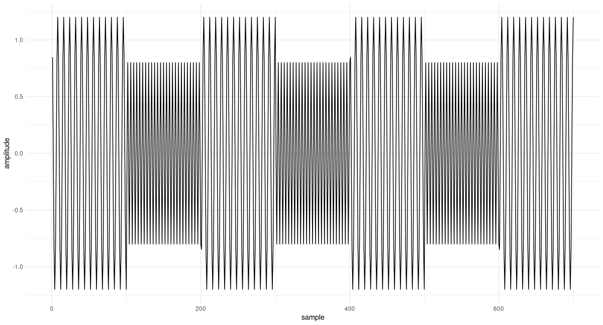
The DFT of the signal is quickly computed:
F <- torch_fft_fft(x)The Fourier-domain representation of the wavelet, on the other hand, is given by:
morlet_fourier <- function(K, omega_a, omega) {
2 * (torch_exp(-torch_square(
K * (omega - omega_a) / omega_a
)) -
torch_exp(-torch_square(K)) *
torch_exp(-torch_square(K * omega / omega_a)))
}Comparing this statement of the wavelet to the time-domain one, we see that – as expected – instead of parameters t and t_k it now takes omega and omega_a. The latter, omega_a, is the analysis frequency, the one we’re probing for, a scalar; the former, omega, the range of frequencies that appear in the DFT of the signal.
In instantiating the wavelet, there is one thing we need to pay special attention to. In FFT-think, the frequencies are bins; their number is determined by the length of the signal (a length that, for its part, directly depends on sampling frequency). Our wavelet, on the other hand, works with frequencies in Hertz (nicely, from a user’s perspective; since this unit is meaningful to us). What this means is that to morlet_fourier, as omega_a we need to pass not the value in Hertz, but the corresponding FFT bin. Conversion is done relating the number of bins, dim(x)[1], to the sampling frequency of the signal, fs:
# again look for 100Hz parts
omega <- 2 * pi * f1
# need the bin corresponding to some frequency in Hz
omega_bin <- f1/fs * dim(x)[1]We instantiate the wavelet, perform the Fourier-domain multiplication, and inverse-transform the result:
K <- 3
m <- morlet_fourier(K, omega_bin, 1:dim(x)[1])
prod <- F * m
transformed <- torch_fft_ifft(prod)And this is the result (fig. 28.7):
df <- data.frame(
x = as.numeric(1:dim(x)[1]) / fs,
y = as.numeric(transformed$abs())
)
ggplot(df, aes(x = x, y = y)) +
geom_line() +
xlab("time") +
ylab("Wavelet Transform") +
theme_minimal()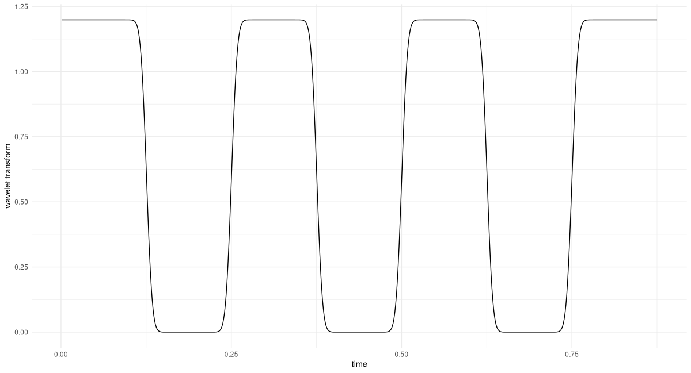
All 100-Hertz-regions are identified flawlessly. Also, looking at the y-axis, we see that the amplitude is correct.
Putting together wavelet instantiation and the steps involved in the analysis, we have the following. (Note how to wavelet_transform_fourier, we now, conveniently, pass in the frequency value in Hertz.)
wavelet_transform_fourier <- function(x, omega_a, K, fs) {
N <- dim(x)[1]
omega_bin <- omega_a / fs * N
m <- morlet_fourier(K, omega_bin, 1:N)
x_fft <- torch_fft_fft(x)
prod <- x_fft * m
w <- torch_fft_ifft(prod)
w
}Let’s use this to probe for the second frequency used, 200 Hertz (fig. 28.8).
K <- 6
transformed <- wavelet_transform_fourier(x, f2, K, fs)
df <- data.frame(
x = 1:dim(x)[1] / fs,
y = as.numeric(transformed$abs())
)
ggplot(df, aes(x = x, y = y)) +
geom_line() +
xlab("time") +
ylab("Wavelet Transform") +
theme_minimal()
Again, we find that matching regions, as well as the amplitude, are correctly identified.
We’ve already made significant progress. We’re ready for the final step: automating analysis over a range of frequencies of interest. This will result in a three-dimensional representation, the wavelet diagram.
28.7 Creating the wavelet diagram
In the Fourier Transform, the number of coefficients we obtain depends on signal length, and effectively reduces to half the sampling frequency. With its wavelet analogue, since anyway we’re doing a loop over frequencies, we might as well decide which frequencies to analyze.
Firstly, the range of frequencies of interest can be determined running the DFT. The next question, then, is about granularity. Here, I’ll be following the recommendation given in Vistnes’ book, which is based on the relation between current frequency value and wavelet scale, K.
Iteration over frequencies is then implemented as a loop:
wavelet_grid <- function(x, K, f_start, f_end, fs) {
# downsample analysis frequency range
# as per Vistnes, eq. 14.17
num_freqs <- 1 + log(f_end / f_start)/ log(1 + 1/(8 * K))
freqs <- seq(f_start, f_end, length.out = floor(num_freqs))
transformed <- torch_zeros(
num_freqs, dim(x)[1],
dtype = torch_cfloat()
)
for(i in 1:num_freqs) {
w <- wavelet_transform_fourier(x, freqs[i], K, fs)
transformed[i, ] <- w
}
list(transformed, freqs)
}Calling wavelet_grid() will give us the analysis frequencies used, together with the respective outputs from the Wavelet Transform.
Next, we create a utility function that visualizes the result. By default, plot_wavelet_diagram() displays the magnitude of the wavelet-transformed series; it can, however, plot the squared magnitudes, too, as well as their square root, a method much recommended by Vistnes whose effectiveness we will soon have opportunity to witness.
The function deserves a few further comments.
Firstly, same as we did with the analysis frequencies, we down-sample the signal itself, avoiding to suggest a resolution that is not actually present. The formula, again, is taken from Vistnes’ book.
Then, we use interpolation to obtain a new time-frequency grid. This step may even be necessary if we keep the original grid, since when distances between grid points are very small, R’s image() may refuse to accept axes as evenly spaced.
Finally, note how frequencies are arranged on a log scale. This leads to much more useful visualizations.
plot_wavelet_diagram <- function(x,
freqs,
grid,
K,
fs,
f_end,
type = "magnitude") {
grid <- switch(type,
magnitude = grid$abs(),
magnitude_squared = torch_square(grid$abs()),
magnitude_sqrt = torch_sqrt(grid$abs())
)
# downsample time series
# as per Vistnes, eq. 14.9
new_x_take_every <- max(K / 24 * fs / f_end, 1)
new_x_length <- floor(dim(grid)[2] / new_x_take_every)
new_x <- torch_arange(
x[1],
x[dim(x)[1]],
step = x[dim(x)[1]] / new_x_length
)
# interpolate grid
new_grid <- nnf_interpolate(
grid$view(c(1, 1, dim(grid)[1], dim(grid)[2])),
c(dim(grid)[1], new_x_length)
)$squeeze()
out <- as.matrix(new_grid)
# plot log frequencies
freqs <- log10(freqs)
image(
x = as.numeric(new_x),
y = freqs,
z = t(out),
ylab = "log frequency [Hz]",
xlab = "time [s]",
col = hcl.colors(12, palette = "Light grays")
)
main <- paste0("Wavelet Transform, K = ", K)
sub <- switch(type,
magnitude = "Magnitude",
magnitude_squared = "Magnitude squared",
magnitude_sqrt = "Magnitude (square root)"
)
mtext(side = 3, line = 2, at = 0, adj = 0, cex = 1.3, main)
mtext(side = 3, line = 1, at = 0, adj = 0, cex = 1, sub)
}Now, let’s see a few wavelet diagrams. We are going to compare choices in two categories. The first concerns what is displayed: magnitude, magnitude squared, or the square root. Since options are finite, in practice you could always try them all. The second, however, is essential: It is about K, the scale of the Morlet wavelet.
Though, in theory, the range of possible Ks is infinite, as soon as we start to enlarge or shrink K we see the respective effects very quickly. And in a publication you can, of course, provide diagrams for a few different K. (Maybe you even should; the information conveyed might be complementary.)
We start with a fixed K of 12, and stay with the default display (which is magnitude; see fig. 28.9). As to the range of frequencies to be analysed, it directly follows from our having generated the data ourselves.
f_start <- 70
f_end <- 230
K <- 12
c(grid, freqs) %<-% wavelet_grid(
x, K, f_start, f_end, fs
)
plot_wavelet_diagram(
torch_tensor(1:dim(grid)[2]), freqs, grid, K, fs, f_end
)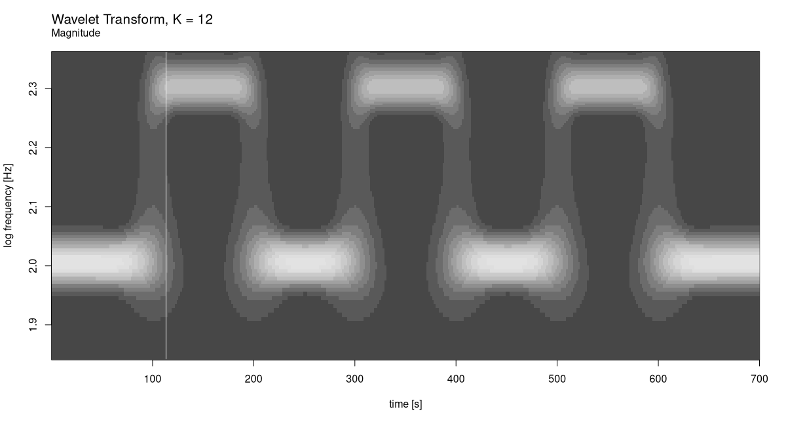
Now compare this with how it looks for squared magnitudes (fig. 28.10).
plot_wavelet_diagram(
torch_tensor(1:dim(grid)[2]), freqs, grid, K, fs, f_end,
type = "magnitude_squared"
)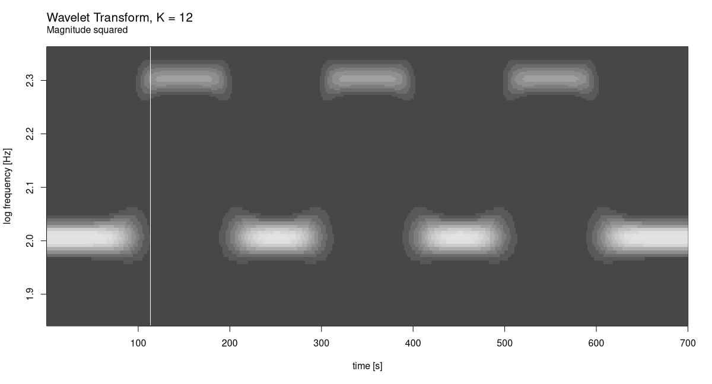
As well as square roots (fig. 28.11):
plot_wavelet_diagram(
torch_tensor(1:dim(grid)[2]), freqs, grid, K, fs, f_end,
type = "magnitude_sqrt"
)
In this case it is clear which display mode works best. But that’s just because we’ve created a very regular signal.
Now, let’s see what happens for smaller K: 6, say. We only plot magnitude squared (fig. 28.12).
K <- 6
c(grid, freqs) %<-% wavelet_grid(
x, K, f_start, f_end, fs
)
plot_wavelet_diagram(
torch_tensor(1:dim(grid)[2]), freqs, grid, K, fs, f_end,
type = "magnitude_squared"
)
While frequency resolution clearly got worse, there is no complementary improvement in how time is handled. Again, this is no surprise, the signal being what it is.
What about the other direction? For K = 24 we have (fig. 28.13):
K <- 24
c(grid, freqs) %<-% wavelet_grid(
x, K, f_start, f_end, fs
)
plot_wavelet_diagram(
torch_tensor(1:dim(grid)[2]), freqs, grid, K, fs, f_end,
type = "magnitude_squared"
)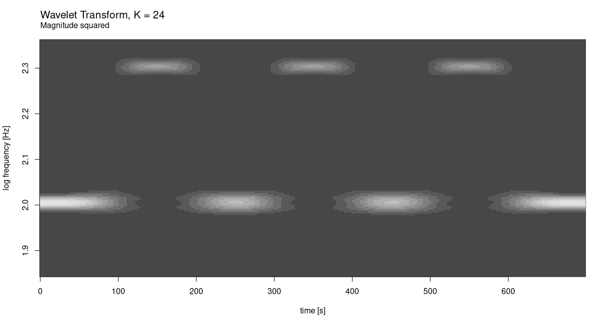
At this scale, we do see a decline in time resolution. Evidently, our initial choice of 12 was better. Just for curiosity’s sake, though, let’s see what would happen for yet bigger K (fig. 28.14).
K <- 48
c(grid, freqs) %<-% wavelet_grid(
x, K, f_start, f_end, fs
)
plot_wavelet_diagram(
torch_tensor(1:dim(grid)[2]), freqs, grid, K, fs, f_end,
type = "magnitude_squared"
)
The result speaks for itself.
Finally – now that we have available re-usable pieces of code, and acquired some first intuition on how time-frequency trade-off works for wavelets – we conclude with a real-world example.
28.8 A real-world example: Chaffinch’s song
For the case study, I’ve chosen what, to me, was the most impressive wavelet analysis shown in Vistnes’ book. It’s a sample of a chaffinch’s singing, and it’s available on Vistnes’ website.
url <- "http://www.physics.uio.no/pow/wavbirds/chaffinch.wav"
download.file(
file.path(url),
destfile = "resources/chaffinch.wav"
)We use torchaudio to load the file, and convert from stereo to mono using tuneR’s appropriately named mono(). (For the kind of analysis we’re doing, there is no point in keeping two channels around.)
library(torchaudio)
library(tuneR)
wav <- tuneR_loader("resources/chaffinch.wav")
wav <- mono(wav, "both")
wavWave Object
Number of Samples: 1864548
Duration (seconds): 42.28
Samplingrate (Hertz): 44100
Channels (Mono/Stereo): Mono
PCM (integer format): TRUE
Bit (8/16/24/32/64): 16 For analysis, we don’t need the complete sequence. Helpfully, Vistnes also published a recommendation as to which range of samples to analyze.
waveform_and_sample_rate <- transform_to_tensor(wav)
x <- waveform_and_sample_rate[[1]]$squeeze()
fs <- waveform_and_sample_rate[[2]]
# http://www.physics.uio.no/pow/wavbirds/chaffinchInfo.txt
start <- 34000
N <- 1024 * 128
end <- start + N - 1
x <- x[start:end]
dim(x)[1] 131072See fig. 28.15 for a time-domain view. (Don’t miss out on the occasion to actually listen to it, on your laptop.)
df <- data.frame(x = 1:dim(x)[1], y = as.numeric(x))
ggplot(df, aes(x = x, y = y)) +
geom_line() +
xlab("sample") +
ylab("amplitude") +
theme_minimal()
Now, we need to determine a reasonable range of analysis frequencies. To that end, we run the FFT:
F <- torch_fft_fft(x)On the x-axis, we plot frequencies, not sample numbers, and for better visibility, we zoom in a bit (fig. 28.16).
bins <- 1:dim(F)[1]
freqs <- bins / N * fs
# the bin, not the frequency
cutoff <- N/4
df <- data.frame(
x = freqs[1:cutoff],
y = as.numeric(F$abs())[1:cutoff]
)
ggplot(df, aes(x = x, y = y)) +
geom_col() +
xlab("frequency (Hz)") +
ylab("magnitude") +
theme_minimal()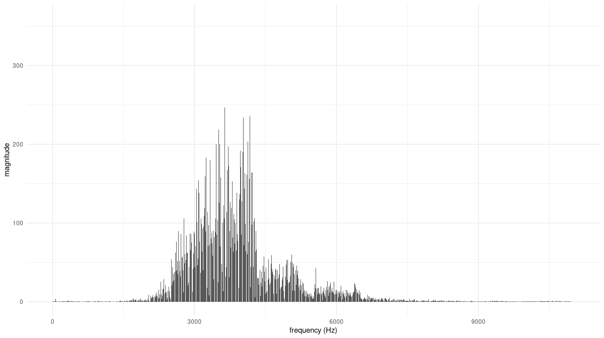
Based on this distribution, we can safely restrict the range of analysis frequencies to between, approximately, 1800 and 8500 Hertz. (This is also the range recommended by Vistnes.)
First, though, let’s anchor expectations by creating a spectrogram for this signal. Suitable values for FFT size and window size were found experimentally. And though, in spectrograms, you don’t see this done often, I found that displaying square roots of coefficient magnitudes yielded the most informative output.
fft_size <- 1024
window_size <- 1024
power <- 0.5
spectrogram <- transform_spectrogram(
n_fft = fft_size,
win_length = window_size,
normalized = TRUE,
power = power
)
spec <- spectrogram(x)
dim(spec)[1] 513 257Like we do with wavelet diagrams, we plot frequencies on a log scale (fig. 28.17).
bins <- 1:dim(spec)[1]
freqs <- bins * fs / fft_size
log_freqs <- log10(freqs)
frames <- 1:(dim(spec)[2])
seconds <- (frames / dim(spec)[2]) * (dim(x)[1] / fs)
image(x = seconds,
y = log_freqs,
z = t(as.matrix(spec)),
ylab = 'log frequency [Hz]',
xlab = 'time [s]',
col = hcl.colors(12, palette = "Light grays")
)
main <- paste0("Spectrogram, window size = ", window_size)
sub <- "Magnitude (square root)"
mtext(side = 3, line = 2, at = 0, adj = 0, cex = 1.3, main)
mtext(side = 3, line = 1, at = 0, adj = 0, cex = 1, sub)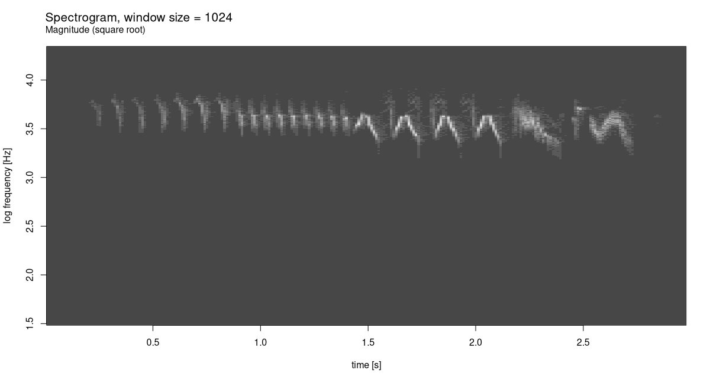
The spectrogram already shows a distinctive pattern. Let’s see what can be done with wavelet analysis. Having experimented with a few different K, I agree with Vistnes that K = 48 makes for an excellent choice (fig. 28.18):
f_start <- 1800
f_end <- 8500
K <- 48
c(grid, freqs) %<-% wavelet_grid(x, K, f_start, f_end, fs)
plot_wavelet_diagram(
torch_tensor(1:dim(grid)[2]),
freqs, grid, K, fs, f_end,
type = "magnitude_sqrt"
)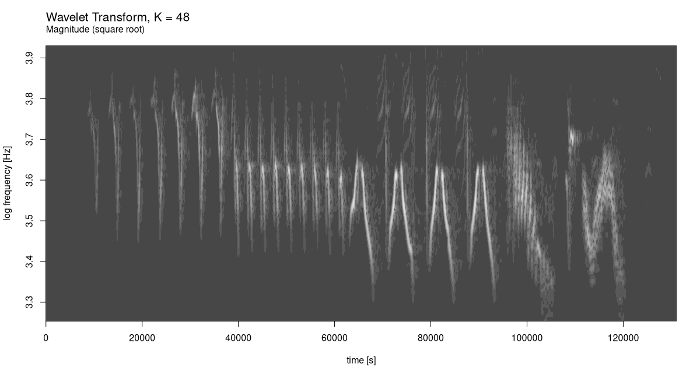
The gain in resolution, on both the time and the frequency axis, is utterly impressive.
With this example, that hopefully has been an inspiring one, I conclude this chapter, and the book. I wish you all the best in your future endeavours with torch!
After Dennis Gabor, who came up with the idea of using Gaussian-windowed complex exponentials for time-frequency decomposition, and Jean Morlet, who elaborated on and formalized the resulting transform.↩︎